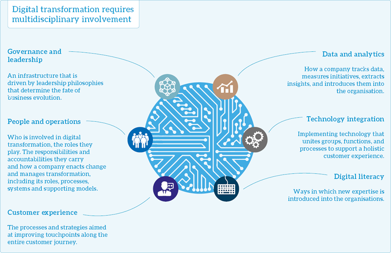
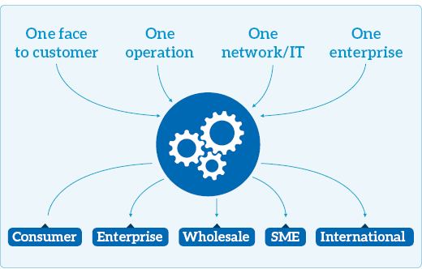
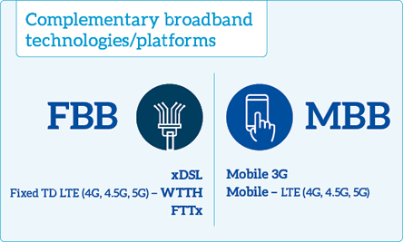
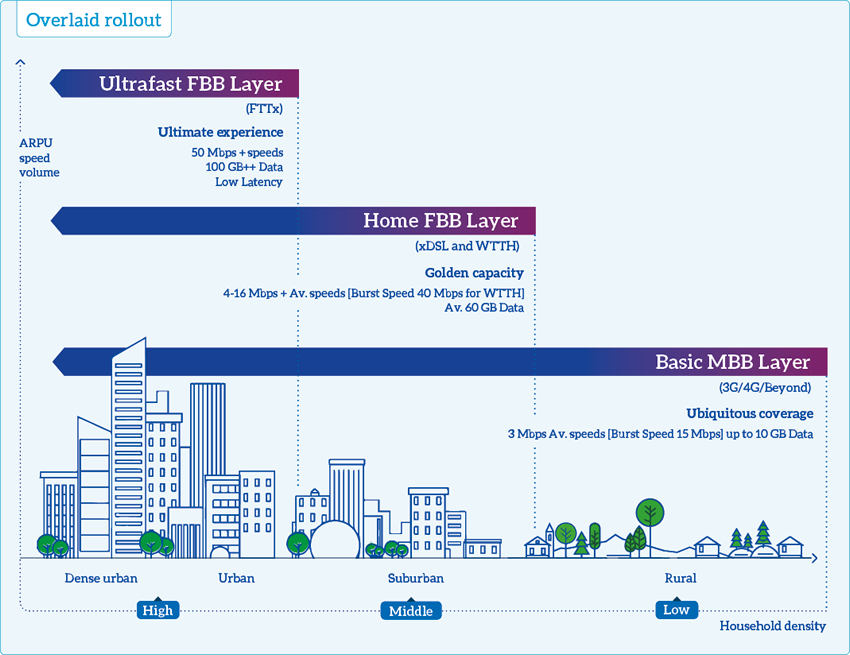
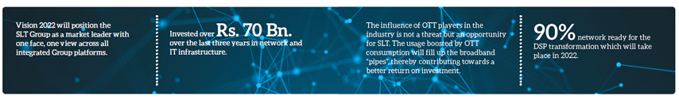
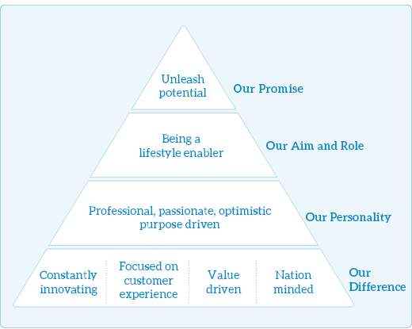
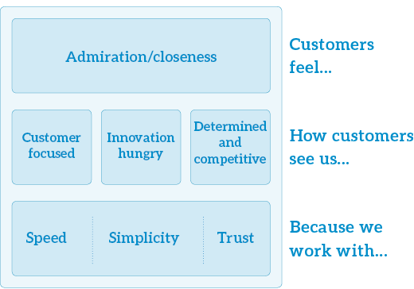

SLT Group Vision 2022
Digital transformation is a key driver of sweeping change in the modern world. The digital market is developing into a global digital economy. Digitalisation has the potential to improve the quality of life and move towards greater societal good. The telecommunication industry is at the heart of global digitalisation as a key enabler by providing the essential connectivity infrastructure for functioning in the digital economy.
The SLT Group, as the national ICT service provider, has recognised the need to evolve in order to facilitate the national digital transformation. In the coming years SLT will address the challenges of IoT or IoE, fibre optic expansion, and 5G technology.
SLT Group Vision 2022 was initiated in 2016 to transform the Group from a communication service provider (CSP) to a digital service provider (DSP) and to enable the Group to become the most preferred digital lifestyle provider by the year 2022. The Group has implemented a Capital Expenditure (CAPEX), Operating Expenses (OPEX), and services plans and has identified other KPIs in the Roadmap to Vision 2022. There is already a digital services revenue target of 15% by 2022. The Group has a five-year window for any adjustments and improvements of the strategy.
Vision 2022 will position the SLT Group as a market leader with one face, one view across all integrated Group platforms. The following are the main components of Vision 2022:
Completing the DSP transformation

By 2022, SLT hopes to complete the transformation from a CSP to DSP. The Group has integrated the TeleManagement Forum’s (TM Forum) internationally-recognised Digital Maturity Model (DM Model), a step-by-step model compiled by the thought leaders in the industry. The TM Forum is the global industry association that drives collaboration and collective problem-solving, to maximise the business success of communication and digital service providers and their ecosystem of suppliers.
The DM Model is split into five dimensions:

Customer – Providing an experience where customers view the organisation as their digital partner using their preferred channels of interaction to control their connected future on and offline.
Strategy – Focuses on how the business transforms or operates to increase its competitive advantage through digital initiatives; it is embedded within the overall business strategy.
Technology – Underpins the success of digital strategy by helping to create, process, store, secure, and exchange data to meet the needs of customers at low cost and low overheads.
Operations – Executing and evolving processes and tasks by utilising digital technologies to drive strategic management and enhance business efficiency and effectiveness.
Culture, people, and organisation – Defining and developing an organisational culture with governance and talent processes to support progress along the digital maturity curve and the flexibility to achieve its growth and innovation objectives.
Each of these five dimensions contain subdimensions representing different aspects of digital maturity. Each subdimension contains a number of criteria statements, 179 in total, that can be rated to provide a view of the current level of digital maturity and a target level.
The groundwork required for the DM Model has already been implemented by SLT. An initial grading will be conducted early 2018 by an accredited consultancy institution to determine SLT’s current digital maturity grading. The results of the initial grading will be shared among the Group. This will give the opportunity to streamline operations and fill any gaps in order to achieve a higher digital maturity grading.
Achieving complete Group synergy
The initial steps to streamline Group structure and synergy were taken in 2016. The ultimate objective is for the Group to be the market leader with one face, one view across all integrated Group platforms. The positions of Group CEO, Group CPO, Group CMO, Group CEWO, Group CIO were established and they are responsible for the activities of the entire operations of the Group.
Strengthening the Group operations model
Through different initiatives, the Group aspires to combine all operations into one enterprise. In doing so, profit can be derived from one consolidated network equipped with all relevant infrastructure ready to handle any and all customer requirements, encompassing the entire range from consumer to enterprises and SMEs. SLT Group will present one face to our customers, while SLT Group will also see one customer. This will be backed by strong and effective promotional and advertising campaigns that highlight the creation of one dynamic entity from all operations.

Consolidating network leadership in 2022
SLT Group hopes to become the most preferred digital lifestyle provider by 2022. This will be the underlying focus of SLT’s operations in the years going forward. The existing product portfolio will be enriched with new and innovative digital lifestyle solutions, content, and collaborations with ICT service providers.
The influence of OTT players in the industry is not a threat but an opportunity for SLT. The usage boosted by OTT consumption will fill up the broadband “pipes”, thereby contributing towards a better return on investment. While collaborating with OTT players, SLT will create its own OTT platform to deliver “carrier-grade” OTT services. Rich Communications Suite (RCS) technology will be developed further to deliver a carrier-grade alternative to OTT based services currently popular for voice, text, audio, picture, and video messaging; leveraging on SLT’s IP Multimedia System (IMS) platform.
SLT Mobitel will maintain its strong market position, by identifying market segments that it can capitalise on. It will continue to upgrade its branches to ensure that they are capable of delivering exceptional performances. The SLT and Mobitel brands will integrate into a holistic group branding approach and will see it leveraging multiple advantages from the ensuing synergies.
The development and promotion of info-communications services will be of key concern to Mobitel as well. These efforts will be supplemented with the continuing expansion of business interests into diverse industries like banking, healthcare, transport, and education.
Investing in the future
SLT understands that customers need more and more bandwidth to accommodate the increasing demands of their digital lifestyles. SLT has invested over Rs. 70 billionover the last two years in network and IT infrastructure which has enabled to further expand SLT’s reliability, seamless data speeds, coverage, and customer service. SLT can assure its customers that SLT is already 90% network ready for the DSP transformation which will take place in 2022. The Group will continue to invest in order to consolidate network leadership in 2022.
The following diagram details SLT’s rollout strategy. SLT pays close attention to factors such as household density to optimise operations in line with securing the maximum reciprocal returns.



Enhancing global connectivity
With the advent of the SEA-ME-WE 5 cable system and landing station, Sri Lanka is well-poised to position itself as a regional digital hub. Sri Lanka can be added to the world’s point of presence (PoP) network which counts Singapore, USA, and the EU amongst its members. This will strengthen the country’s status as a key IT: BPO and data centre destination. SLT will oversee South Asia’s first cutting-edge submarine cable depot in the Galle Port in Southern Sri Lanka. This cable maintenance station will oversee the repairing of all cables in the region, even those pertaining to external telecommunications operators.
Government of Sri Lanka and Vision 2022
We remain committed to assuring SLT’s role as the national ICT services provider. The Sri Lankan Government has taken significant measures to transform Sri Lanka into a digital economy. One such initiative is being undertaken by the Ministry of Telecommunication & Digital Infrastructure with the support of McKinsey and Company who will work on the process of developing Sri Lanka’s Digital Economy Strategy. As the national ICT service provider, SLT welcomes the Government’s initiatives and is ready to render all the support needed to implement such measures.
SLT has partnered with the Sri Lankan Government on many national projects like the Lanka Government Network 2.0 (LGN 2.0), signing a memorandum of understanding (MoU) with the Megapolis and the Western Development programme, and also SLT hopes to sign an MoU with Colombo Port City project in the near future. SLT also works very closely with the Telecommunications Regulatory Commission of Sri Lanka (TRCSL).
SLT has also enabled online vehicle registration through the Department of Motor Traffic, online VISA, e-NIC, e-Pension, Foreign Affairs and Tourism, Banking services, 1919 Government Information Centre – GIC, SL Police surveillance system, and mRailway ticketing and reservations.
Lanka Government Network (LGN) 2.0
SLT was chosen as the total communication service provider and communication infrastructure provider to the project LGN 2.0. This is a project initiated by the Government in partnership with SLT to connect all the government establishments and institutes into one network. SLT has already set up an LGN fibre optic network covering 315 government establishments which will expand to 860 institutes by the end of the year.
Vision 2022 and Sustainable Development Goals (SDGs)
The UN Sustainable Development Goals (SDGs) adopted in 2015 invite global action by 2030 in three overarching areas: end poverty, combat climate change, and fight injustice and inequality. ICT is a powerful enabler for each of the 17 goals, and an essential catalyst in driving rapid transformation. The spread of information and communication technology and global interconnectedness has great potential to accelerate human progress, to bridge the digital divide and to develop knowledge societies, and promote inclusive and sustainable economic growth. IoT will have a major impact in areas such as grassroots delivery of healthcare and education, positively transforming communities within a time frame that would have been unimaginable just a few years ago.
SLT is cognisant of the role of telecommunication providers in reaching the SDGs. The principles of sustainability and the drive to achieve SDGs are embedded in Vision 2022. SLT recognises that creating an inclusive digital economy is vital to achieving the SDGs which is embedded in SLT Vision 2022.
Vision 2022 and SLT brand positioning
The prolific growth of digital technology has led to an evolution in the role of technology in people’s lives. Technology has gone from fulfilling lower order needs such as connectivity, access, convenience, and speed to fulfilling higher order of needs such as community, bonding, creativity to fulfilment of human potential through empowerment, empathy, and activism.
The SLT Vision 2022 of becoming the preferred digital lifestyle enabler in Sri Lanka, will address these higher order needs and help our people reach their full potential. Thus, the SLT brand is positioned in such a way.
Our brand framework
We believe that incredible things will happen when you unleash people by fuelling aspiration and opportunity. Our brand framework shows how we make our brand stand out. It explains our brand strategy and how we bring it to life in everything that we do. This is the promise we make to our customers and other stakeholders everyday.

Fulfilling the SLT brand promise
The following chart describes the things we must focus on. We value intelligent, quick decisions and actions. We try to keep things simple. We are customer focused, innovation hungry, and determined and competitive. We operate across the entire need spectrum more robustly than any of our competitors, so we can give our customers both amazing innovations and incredible value.
